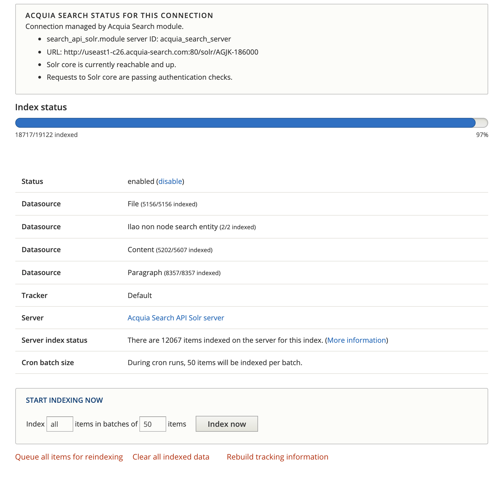

Indexing and Updates¶
Manually indexing¶
Note
Product team staff run this task manually as needed. Other users with the content manager role may run this if needed but the preferred approach is to open a support ticket.
Go to the indexing page under Configuration->Search and metadata->Search API->Acquia Search Solr Index.
When the queue can’t keep up with content changes, we may need to run the indexing manually. See the above image:
The index status will show a percentage indexed.
When this is less than 100%, pressing the Index now will cause the backlog to clear
Do not close your browser window until the queue is cleared.